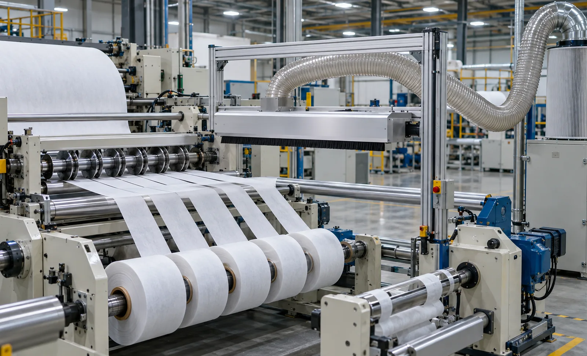
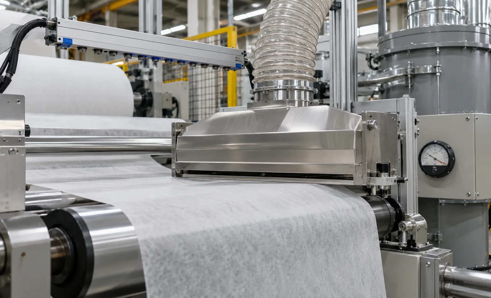

Published September 21, 2026 | By HDPTH Technical Editorial Team

Every parent roll carries contamination into the machine, and the knives add their own contribution: shear and razor slitting on nonwovens liberates a steady stream of short fibres and fines. Whatever is still on the web at the rewind is wound in layer after layer and surfaces later as print voids, coating defects, inspection flags or customer complaints. Cleaning is a product-quality decision disguised as an accessory.
What web cleaning actually removes
Particles are held in different ways, and the technology follows from that:
- Loose surface dust: held mainly by electrostatic attraction, easy to extract once the charge is neutralised.
- Fibre ends and cutting fines: partly embedded, so they need mechanical action.
- Sticky residue: binder, soft coating or adhesive bleed cannot be vacuumed and needs a renewable contact surface.
Contact cleaning: tacky rolls and brushes
A tacky roller runs against the web at low nip force; particles transfer to the roller, and the loaded layer is peeled off as a consumable sheet or continuously washed and dried in a closed unit. Performance on embedded particles is high and it handles sticky contamination, but the trade-offs are real: consumable cost, regular roll changes, nip force that must stay constant across the width, and marking risk on soft or embossed surfaces. Brush-based contact cleaning is gentler but less effective on fine dust and needs wear monitoring. Contact cleaning suits robust webs — spunbond, laminates, films, papers — and should be avoided on wet, freshly coated or easily deformed surfaces.
Non-contact cleaning: vacuum, air assistance and ultrasonics
A non-contact head creates controlled airflow close to the web — typically a narrow vacuum slot, sometimes paired with an air knife — that detaches particles and carries them into a filter. Because nothing touches the web there is no marking, no drag and no consumable, which makes it the default for delicate nonwovens, embossed materials and coated films. The limits are that it removes surface particles rather than embedded ones, and that performance depends on holding slot velocity as filters load. Ultrasonic and air-amplified heads add agitation for higher speeds and finer particles at higher capital cost.
Where cleaning belongs in the machine
The dominant source of loose particles is the cutting station, so cleaning after the knives and before the winding nip captures debris that would otherwise be rolled in. A secondary pre-clean ahead of slitting reduces dust dragged across the knives and keeps the cut edge cleaner. Check the practicalities for each position: a supported span with stable wrap, room for ducting and filter access, and service without defeating interlocked guarding.
| Decision | What to specify | Why it matters |
|---|---|---|
| Technology | Contact tacky roll or brush, or non-contact vacuum, matched to contaminant and web sensitivity | Aggressive contact on a delicate web marks it; gentle vacuum leaves embedded fibre behind |
| Position | After slitting, before winding; optional pre-clean before the knives | Cutting generates most debris — remove it before it is wound in |
| Static | Ionising bars upstream of the head, sized for speed and width | Charged webs re-attract dust the extractor just removed |
| Extraction | Capture velocity, total volume, filter class, pressure-loss alarm | Filters that load silently degrade cleaning long before anyone notices |
| Acceptance | Defect count per defined web area, before and after, on your material at production speed | Turns cleaning from a claim into a contractual number |
Sizing, filtration and safety
Ask the supplier to state capture velocity at the slot, total extraction volume and filter efficiency for your particle size, and to confirm filter area is sufficient for a full shift. Fine nonwoven lint needs finer filtration than trim chips, and the filter should come with a stated pressure-loss curve and an alarm that triggers before performance falls. Noise counts too — a cleaning blower can dominate the sound level of a line that otherwise passes its vibration and noise acceptance limits. And fine nonwoven dust is combustible: confirm how extraction and collection interact with your site dust hazard assessment before installation.
When cleaning pays off
Payback comes from avoided defects, not from energy savings. Three numbers settle it: the reject or rewind rate attributable to visible particles, the material and conversion value lost with each affected roll, and the claim cost when contamination reaches a hygiene or medical customer. Where an inspection system flags particles at a rate that forces reprocessing, payback is usually short. Where the product tolerates visible lint, a simple extraction hood may deliver most of the benefit.

Contamination costing you rejects?
Send HDPTH your material, width, speed and the defect you are chasing. We will propose a cleaning and static configuration — contact or non-contact, placement and filtration — and quote it with the machine.
Submit Your Project InquiryQuestions to put to every vendor
- Which contaminant on my material does this system remove, and how was that measured?
- Where does the head sit relative to the knives, and what is the wrap and span?
- What are capture velocity, extraction volume and filter class at my speed and width?
- What are the consumables, and their cost per production hour?
- How much noise does the extraction add at the operator position?
Building the full specification?
Read our guides on dust extraction systems and static control to align cleaning with the rest of your acceptance requirements.
Contact HDPTHFrequently asked questions
What is the difference between contact and non-contact web cleaning?
Contact cleaning uses a tacky adhesive roller or rotating brush that touches the web and lifts particles off the surface; the collected dirt is peeled away on a consumable layer or washed off continuously. Non-contact cleaning uses a vacuum slot or head close to the web, sometimes with an air knife or ionised air, to detach and extract particles without touching it. Contact cleaning is more aggressive on embedded particles; non-contact cleaning is safer for delicate, embossed, coated or wet surfaces and adds no drag or marking risk.
Where should a web cleaning unit be installed on a slitter rewinder?
The highest-value position is immediately downstream of the slitting knives and before the winding section, because cutting generates the largest share of loose particles. Many lines add a light pre-clean before the slitting section to keep debris off the knives and the cut edge. The head must sit on a well-supported span with stable wrap, with room for ducting and filter access, and a layout that allows consumable changes without removing guarding interlocked with the drive.
How much airflow and filtration does a cleaning system need?
Sizing follows web width, line speed and dust load, not a fixed kW figure. The supplier should state capture velocity at the slot, total extraction volume and filter class for your particle size, and confirm filter area is sufficient for a full shift at production rate rather than demo speed. Fine nonwoven lint needs finer filtration than trim chips. Ask for the pressure-loss curve and whether the system alarms on differential pressure before cleaning performance degrades.
Does web cleaning interact with static control?
Yes, and ignoring this is the most common reason a cleaning system underperforms. Particles are held on a nonwoven or film surface largely by electrostatic attraction, so a charged web re-attracts the dust a vacuum slot has just detached. Ionising bars upstream of the cleaning head neutralise the charge so extraction can remove the particle. Because charge generation rises with speed and low humidity, specify static control and cleaning together and verify particle reduction with both running.
When does a web cleaning system pay for itself?
Payback comes from defects avoided, not energy or labour. Quantify it with three numbers: the reject or downgrade rate attributable to visible particles, the material and conversion value lost with each affected roll, and the claim or line-stoppage cost when contamination reaches a hygiene or medical customer. Where an inspection system flags particles at a rate that forces rewinding, payback is usually short. Where the product tolerates visible lint, a simple extraction hood may be enough.
Sources
- Lundberg Tech: dust and waste handling in slitting and rewinding processes
- Meech International: static control and web cleaning on slitter rewinders
- Simco-Ion: static control basics — charge generation, measurement and neutralisation
- OSHA: combustible dust safety publication for collection, housekeeping and ignition control
- ISO 12100: risk assessment and risk reduction for machinery